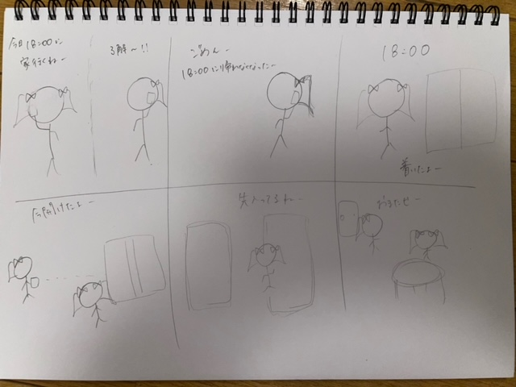

第2回
Iotについて
1.Iotでできそうなこと

- 出席を席に座って遠隔でできる
- 服のサンプルにQRコードを付けて買い物をする
- 料理の皿にQRを付けて食べたらそのまま決済できる
- 離れたところから記念写真、集合写真が撮れる
- QRコードでトイレや電車の混雑状況が遠くからわかる
- QRコードのボタンで自動ドアが開く
2.遠隔で自動ドアが開くシステム
友達と家で遊ぶ約束をしていたが、仕事が押して待ち合わせ時間に家に帰れなくなってしまった。
友達から家の前に到着したと連絡が来たタイミングでスマホから自宅の鍵を開け、友達に家の中で待っててもらえる。
これがあることで、友達に鍵を預けたりパスワードを教えたりせずに家に先に上げることができる。
